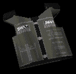

The shooting range
The items
The Kevlar vest  |
The Kevlar vest is just a bullet proof vest. It can resist bullets in the chest area, but eventually it will fall into tatters after a certain amount of hits. But it does have it's side effects, like a sniper rifle round will penatrate the vest and so will a knife, as well as the M4 (after a few hits). But allround this is great asset to any weapon as it provides good protection.
The laser site
The laser site is a screw on attatchment to a weapon. Once screwed on it will project a infra red beam and make a bright red dot on what ever you point your gun at. This improves accuracy quite alot, but can reveal your position to the enemy due to the red dot travelling along the walls as you run along. It only works with a few weapons, these include the Mp5/10, M4, and Pistol.
| The silencer 
Sorry about the image but it is too hard to see when it's black. The silencer is also screwed onto the barrel of your weapon and once on reduces the noise of when the gun is fired and also takes away all the muzzel flash. This adds stealth to a game especially on dark levels. It works a treat with the sniper rifle, imagin getting perched up nice and high in a dark room and silently picking off the enemies without them having a clue where you are. Works with the sniper rifle, MP5/10 and pistol
| The Stealth slippers  These niffty little pair of slippers aint your ordinary "pick the paper up off the front lawn" jobs oh no these little slippers will let you walk around without making a single sound, unless of course you were to fall from 10 metres :) Which means if there are loads of snipers chuck on a pair of these babies grap your handcannon and sneek up on the pests and BLAST them to kingdom-come. Whatch him fly across the map with blood trailing behind. Or you might want to try these with the knives and do some back-stabbing. They are very useull nonetheless. | | The Bandolier  | Ok your thinking "oooo a green kevlar vest...wow" But it isn't so stop thinking that!:) No it's about as affective as a wooly jumper when it comes to stoping bullets, but it is a very very useful item. First of all it starts by giving you 1 extra clip, so now your M4 has 3 clips when you start (one loaded remember), plus (only if the server has the option turned on, which is rare nowdays) it gives you a grenade, these little balls of fun are very boomtastic and if used in the right situation very rewarding, and last but not least there's irvision (config command: bind x irvision) which aluminates all the bright colours (in TP it aluminates one team one colour and the other another) which is pricless when it comes to sniping. So your thinking wow the wonder item. Well it's not really, you see all the items above allow you to improve something, whether it be accuracy, strength, stealth etc. But this just loads you up. Think of it as one of those raincoats that have lots of pockets :) |